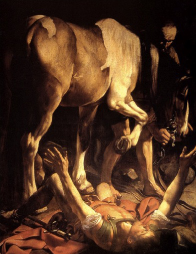
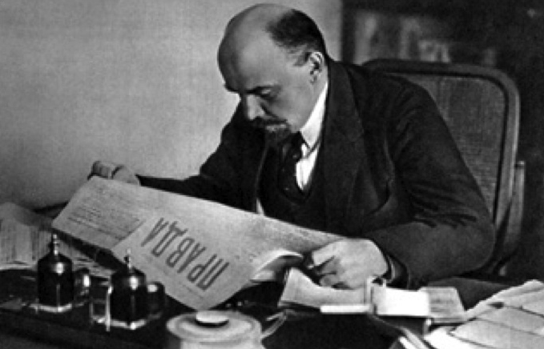
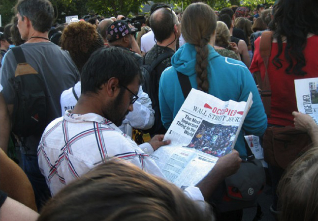
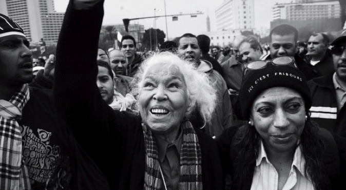

<!DOCTYPE html>
<html>

<!-- Mirrored from https://www.susanbuckmorss.info/text/commonist-ethics/ by HTTrack Website Copier/3.x [XR&CO], Tue, 22 Sep 2026 13:19:41 GMT -->
<!-- Added by HTTrack --><meta http-equiv="content-type" content="text/html;charset=UTF-8" /><!-- /Added by HTTrack -->
<head>
	<title>Susan Buck-Morss — Texts — Commonist Ethics</title>
	<meta charset="utf-8">
	<meta name="language" content="en">
	<meta name="author" content="Susan Buck-Morss">
	<meta name="description" content="Susan Buck-Morss is an American philosopher and intellectual historian. She is Distinguished Professor of Political Science at the CUNY Graduate Center in New York City.">
	<meta name="viewport" content="width=1280">
	<link rel="shortcut icon" href="../../common/images/favicon.ico">
	<link rel="stylesheet" href="../../common/css/reset.css">
	<link rel="stylesheet" href="../../common/css/basec4ca.css?1">
	<link rel="stylesheet" href="../../../fnt.webink.com/wfs/webink6f60.css?project=877037AC-BFB8-4D05-BCDB-068C8613A3B0&amp;fonts=79FFD680-777D-F4B0-8FFE-043ABAB4969A:f=ArnhemPro-Normal,C98BFC04-C076-251D-3B46-C769B9CB7B82:f=ArnhemPro-SemiBold,73704233-3386-C589-60FD-C3FAB616B8F4:f=ArnhemPro-Black,2AA35A4E-ED48-3B8D-3C79-2764EFAD2C9E:f=ArnhemPro-NormalItalic,28B3A5ED-D5C1-D5A2-3BA1-3F6B0EDC2564:f=ArnhemPro-BlondItalic,D110A804-4424-24A6-AAD2-B84BBD98DF1D:f=ArnhemPro-SemiBoldItalic,06D95863-E705-5F05-EA78-8626BFF01A05:f=ArnhemPro-Blond,3135BEB3-909F-1750-9598-228D84A7A7B0:f=ArnhemPro-BoldItalic,C3800308-338C-D99D-F242-61AFA4B1DF83:f=ArnhemPro-Bold,EEC0F867-D6CF-6962-0AE6-E60084975D3E:f=ArnhemPro-BlackItalic">
	<link rel="alternate" type="application/rss+xml" title="RSS" href="../../rss/index.html" />
	
	<script type="text/javascript" src="../../common/js/jquery-1.8.3.min.js"></script>
	<script type="text/javascript" src="../../common/js/jquery.scrollto.min.js"></script>
	<script type="text/javascript" src="../../common/js/jquery.imagesloaded.min.js"></script>
	<script type="text/javascript" src="../../common/js/customSelect.jquery.min.js"></script>
	<script type="text/javascript" src="../../common/js/jquery.cookie.js"></script>
	<script type="text/javascript" src="../../common/js/sessvars.js"></script>	
	<script type="text/javascript" src="../../common/js/mainc4ca.js?1"></script>
	
	
	<script type="text/javascript" src="../../../use.typekit.net/zou0pho.js"></script>
	<script type="text/javascript">try{Typekit.load();}catch(e){}</script>
</head>
<body class=" pagetype-text">
<div class="wrapper">
<div id="darkworld">

	<div class="info-strip slim">
		<h1 class="site_title"><a href="../../index.html">Susan Buck-Morss</a></h1>
	</div>	

	<div class="constellation"><h2 id="toggle"><a href="#">Commonist Ethics</a></h2><ul class="warburg"><li height="396" width="282"><a class="internal" href="#fig:102"></a></li><li height="136" width="182"><a class="internal" href="#fig:103"></a></li><li height="211" width="282"><a class="internal" href="#fig:105"></a></li><li height="235" width="182"><a class="internal" href="#fig:108"></a></li><li height="190" width="282"><a class="internal" href="#fig:119"></a></li><li height="285" width="382"><a class="internal" href="#fig:118"></a></li><li height="197" width="282"><a class="internal" href="#img:112"></a></li><li height="116" width="182"><a class="internal" href="#fig:104"></a></li><li height="196" width="282"><a class="internal" href="#fig:133"></a></li><li height="120" width="182"><a class="internal" href="#fig:374"></a></li><li height="154" width="282"><a class="internal" href="#fig:152"></a></li></ul></div></div>

<div id="lightworld" class="is-open">
	<div class="wrapper">
	
		<div class="meta-before"><h1 class="site_title"><a href="../../index.html">Susan Buck-Morss</a></h1><a href="#close" id="function-close">×</a></div><div class="wrapper-content"><h1 id="main-title">Commonist Ethics</h1><h1>1.</h1>

<p>The First Point:  Politics is not an ontology. The claim that the political is always ontological needs to be challenged.<sup id="fnref:1"><a href="#fn:1" rel="footnote">1</a></sup> It is not merely that the negative the case &#8212; that the political is never ontological<sup id="fnref:2"><a href="#fn:2" rel="footnote">2</a></sup> (as Badiou points out, a simple negation leaves everything in place<sup id="fnref:3"><a href="#fn:3" rel="footnote">3</a></sup>). Instead, what is called for is a reversal of the negation:  The ontological is never political.</p>

<p>It follows that the move from la <em>politique</em> (everyday politics) to <em>le politique</em> (the very meaning of the political) is a one-way street.  With all due respect to Marcel Gauchet, Chantal Mouffe, Giorgio Agamben, and a whole slew of others, the attempt to discover within empirical political life (<em>la politique</em>) the ontological essence of the political (<em>le politique</em>) leads theory into a dead end from which there is no return to actual, political practice. There is nothing gained by this move from the feminine to the masculine form. The post-metaphysical project of discovering ontological truth within lived existence fails politically. It fails in the socially disengaged Husserlian-Heidegerian mode of bracketing the <em>existenziell</em> to discover the essential nature of what &#8220;the political&#8221; is. And it fails in the socially critical, post-Foucauldian mode of historicized ontology, disclosing the multiple ways of political being-in-the-world within particular, cultural and temporal configurations. </p>

<p>This is not news. From the mid-1930s on, it was Adorno&#8217;s obsessive concern, in the context of the rise of fascism, to demonstrate the failure of the ontological attempt to ground a philosophy of Being by starting from the given world, or, in Heideggerian language, to move from the ontic, that is, being [<em>seiend</em>] in the sense of that which is empirically given, to the ontological, that which is essentially true of existence (<em>Dasein</em> as the &#8220;<em>a priori</em> structure&#8221; of &#8220;existentially&#8221;<sup id="fnref:4"><a href="#fn:4" rel="footnote">4</a></sup>). Adorno argued that any ontology derived (or reduced<sup id="fnref:5"><a href="#fn:5" rel="footnote">5</a></sup>) from the ontic, turns the philosophical project into one big tautology.<sup id="fnref:6"><a href="#fn:6" rel="footnote">6</a></sup> He has a point, and the political implications are serious. </p>

<p>Ontology identifies. Identity was anathema to Adorno, and nowhere more so than in its political implications, the identity between ruler and ruled that fascism affirmed. Indeed, even parliamentary rule can be seen to presuppose a striving for identity, whereby consensus becomes an end in itself, regardless of the truth content of that consensus.<sup id="fnref:7"><a href="#fn:7" rel="footnote">7</a></sup> It is not that Heidegger&#8217;s philosophy (or any existential ontology) is in-itself fascist (that would be an ontological claim). Rather, by resolving the question of Being <em>before</em> subsequent political analyses, the latter have no philosophical traction. They are subsumed under the ontological <em>a prioris</em> that themselves must remain indifferent to their content.<sup id="fnref:8"><a href="#fn:8" rel="footnote">8</a></sup> Existential ontology is mistaken in assuming that, once &#8220;the character of being&#8221; (Heidegger) is conceptually grasped, it will return us to the material, empirical world and allow us to gather its diversities and multiplicities under philosophy&#8217;s own pre-understandings in ways adequate to the exigencies of collective action, the demands of actual political life. In fact, the ontological is never political.  A commonist (or communist) ontology is a contradiction in terms.</p>

<p>But, you may ask, did not Marx himself outline in his early writings a full ontology based on the classical, Aristotelian claim that man is by nature a social animal? Are not the 1844 manuscripts an elaboration of that claim, mediated by a historically specific critique, hence an extended, <em>social</em> ontology of man&#8217;s alienation from nature (including his own) and from his fellow man? Yes, but in actual, political life, this ontological &#8220;man&#8221; does not exist. </p>

<p>Instead, we existing creatures are men and women, black and brown, capitalists and workers, gay and straight, and the meaning of these categories of being is in no way stable. Moreover, these differences matter less that whether we are unemployed, have prison records, or are in danger of being exported. And no matter what we are in these ontic ways, our beings do not fit neatly into our politics as conservatives, anarchists, evangelicals, Teaparty-supporters, Zionists, Islamists, and (a few) Communists. We are social animals, yes, but we are also anti-social, and our animal natures are thoroughly mediated by society&#8217;s contingent forms. Yes, the early Marx developed a philosophical ontology. Nothing follows from this politically.  Philosopher-king-styled party leaders are not thereby legitimated, and the whole thorny issue of false consciousness (empirical vs. imputed/ascribed [<em>zugerechnectes</em>] consciousness) cannot force a political resolution. At the same time, philosophical thought has every right &ndash; and obligation &#8212; to intervene actively into political life. Here is Marx on the subject of intellectual practice, including philosophizing:</p>

<blockquote>
  <p>But again when I am active scientifically, etc, &#8212; when I am engaged in activity which I can seldom perform in direct community with others &ndash;- then I am social, because I am active as a man [human being<sup id="fnref:9"><a href="#fn:9" rel="footnote">9</a></sup>]. Not only is the material of my activity given to me as a social product (as is even the language in which the thinker is active): my own existence is social activity, and therefore that which I make of myself, I make of myself for society and with the consciousness ofmyself as a social being. <sup id="fnref:10"><a href="#fn:10" rel="footnote">10</a></sup>  </p>
</blockquote>

<p>Again, no matter how deeply one thinks one&#8217;s way into this ontological generalization, no specific political orientation follows as a consequence. It describes the intellectual work of Heidegger and Schmitt every bit as much as it does that of Marx or of us ourselves.</p>

<p>For Marx, ontological philosophy was only the starting point in a lifelong practice of scientific thinking that developed in response to the historical events surrounding him. Through the trajectory of his work, the entire tradition of Western <em>political</em> philosophy took a left turn away from metaphysics and toward an engagement with the emerging social sciences &#8212; economics, anthropology, sociology, psychology &#8212; understood not in their positivist, data-gathering or abstract-mathematical forms, but as sciences of history &#8212; not historicality, historicity, historicism or the like, but concrete, material HISTORY. With this hard-left turn (which is an orientation that may or may not involve elements from &#8220;the linguistic turn,&#8221; the &#8220;ethical turn,&#8221; the &#8220;aesthetic turn&#8221;), political philosophy morphs into social theory done reflectively, that is, critically. It becomes critical theory.</p>

<p>When Marx said thinking was itself a practice, he meant it in this sense. He did not then ask: what is the ontological meaning of the <em>being of practice</em>. Instead, he tried to find out as much as he could about the socio-historical practices of actual human beings in his time.</p>

<p>So the question Marx&#8217;s early writings leaves us with is this: How do we turn this social &#8212; we could say in a descriptive way, social<em>ist</em> &#8212; fact of our work, and our consciousness of this work as social beings, into a commonist practice? How are we to conceive of a commonist ethics? Not by the phenomenological reduction to some essence of what it is to be a social being: i.e., a caring being, a being-to-death, a being-with, etc., as Heidegger proposed, but rather, by an analysis, a becoming-conscious of the specific society, the specific cares, the specific deaths that are simultaneous with our own, not common in the sense of the same as ours (experiences are very unequal in today&#8217;s society), but as happening to others who share, in common, <em>this</em> time and <em>this</em> space &#8212; a space as big as the globe and a time as actual as now. </p>

<h1>2.</h1>

<p>Marx changed the relationship between politics and philosophy by creating a hinge out of the social sciences. This hinge has worn thin. Today&#8217;s philosophically naive social sciences purport to be objective as they splinter reality into self-referential, academic disciplines that argue from present-day &#8220;givens&#8221; as a quasi-natural base (rather than dynamic, unstable structures that depend on human action).  For its part, philosophy, going it alone, retreats to the humanities &#8212; to normative thinking, an analysis of reason and the Kantian world of moral oughts, or, alternatively, to a Nietzschean-inspired anti-rationalism, the celebration of affect, cultural relativism, literary narativity, hermeneutic contingency. Even <em>critical</em> philosophy shares with the positivist sciences from which it has cut itself off the presumption that it can know reality on its own. Both approaches &#8212; thought without empirical understanding and empirical understanding without thought, without critical reflection &#8212; are extremely susceptible to reification.</p>

<p>Meanwhile, Marxism, orphaned by both sides of the academic project, the sciences and the humanities, risks dogmatism if it claims to provide knowledge beforehand (<em>a priori</em>) of the political meaning of events on the basis of century-old texts, fitting every empirical factoid into its preexisting interpretive frame. As the master-code of history, Marxism grants to an anthropomorphized capitalist system all-powerful agency. Capitalism masterminds events, exploits voraciously for private gain, delights in crisis, all the while thwarting our best moral intentions, determining historical outcomes with a cleverness far greater than any Hegelian cunning of reason could provide.</p>

<p>Marx, as everyone knows, used the term capitalism only a handful of times. The big book is called <em>Capital</em>. And it is a critical exposure of the economic practices of his time, including the processes of fetishism and reification that make it appear that the laws of capital are our necessary fate. </p>

<p>Now I am going to make a tedious point: Due to the epistemological consequences, we need to reject creating an &ndash;ism out of any political or theoretical orientation. No communISM, no capitalISM, no MarxISM, no totalitarianISM, no imperialISM,&ndash; no isms at all.<sup id="fnref:11"><a href="#fn:11" rel="footnote">11</a></sup> These are cosmological systems, economies of belief that resemble the medieval Christological economy (<em>oikonomia</em>) in that all the elements are internally consistent and logically satisfying, as long as there is no contamination by facts or events that, like some sort of illegal aliens, enter from the outside. The simple words &#8212; communist or socialist, capitalist or Marxist, etc. are a different story. If they are used merely as descriptive adjectives, they refer to qualities (determinations) of objects in the world, which they define &#8212; objects that, if we are to be consequent materialists, must have priority over the concepts we use to name them.<sup id="fnref:12"><a href="#fn:12" rel="footnote">12</a></sup></p>

<p>Political practice, too, is vulnerable to seduction by the -ism. It is a mistake to adopt anarchISM or socialISM, TrotskyISM or IslamISM, radicaISM, or parliamentarianISM as a system of belief determining one&#8217;s actions in advance.  Conditions change, and practice needs to respond to new situations. Seize state power so as to control its ideological apparatuses? Yes, but what if, after the global transformation of capital, the state itself has become an ideological apparatus? Base one&#8217;s politics on an anarchist respect for democratic agency? Absolutely. But not if that means yielding to the manipulative tactics of right-wing populism in its increasingly widespread forms.</p>

<p>To say, with Althusser, that Marx abandoned his early humanism for a &#8220;science of history&#8221; implies that Marxist science is trans-historical and eternal, an ontological first principle immune to precisely the historical specificity on which it insists &ndash; as if science were not itself historical. (We have only to think of the historical limits of the science of Ricardo or Malthus, or, given the present crisis, the Chicago School of economics, to make that point clear.) To argue, with Negri, for a &#8220;historical ontology&#8221; based on a scientific understanding of the process of capitalist class struggle is a dubious alternative. Negri wants to add historical contingency to the mix, at the same time counting on an ontological fix to avoid the dangers of relativism that contingency implies. He does not let go of the class struggle as the <em>prima philosophia</em>, the philosophic first principle, on which the whole political project is grounded. But if, pace Negri, there can be no ontology of history, it is because history is the realm of human freedom, and therefore the realm of the unpredictable &#8212; in thought as well as in practice. At this point, rather than trying to develop an ontology of freedom, we need to recognize freedom&#8217;s surprising, and fleeting appearance in the world. </p>

<p>I am showing my true colors. I am an incorrigable pragmatist when it comes to critical theory. But that is not pragmatISM, in Rorty&#8217;s or even Dewey&#8217;s sense  (and it has nothing to do with being an American).  It is closer to what Bert Brecht described (and admired) as <em>plumpes Denken</em> &ndash; non-elegant thinking.  So, for example, where the elegant philosopher would discover a concept by searching for the classical Greek meaning of a term, I take my lead from modern Greek, <em>demotiki</em>, the street language of the people (demos), that, along with the so-called fiscal irresponsiblity of the Greeks themselves, is largely disdained by the European intelligentsia. Ta <em>pragmata</em> in modern Greek refers to the practical things that you use in daily existence. In German: <em>die Klamotten</em>, in the sense of the stuff &#8212; it might look like junk to others, but it&#8217;s the stuff that you need and use every day. </p>

<p>Deployed in this sense, a pragmatic approach to doing theory bears a resemblance to the point that the Nigerian novelist Wole Soyinka made when he criticized the understanding of <em>Nègritude</em> as ontology by saying: &#8220;A tiger does not proclaim its tigritude, he pounces.&#8221; He later clarified: &#8220;a tiger does not stand in the forest and say &#8216;I am a tiger.&#8217; When you pass where the tiger has walked before, you see the skeleton of a duiker, you know that some tigritude has emanated there.&#8221;<sup id="fnref:13"><a href="#fn:13" rel="footnote">13</a></sup> (Figures 1 and 2.)</p>

<p>Soyinka abandons ontology for something close to what I mean by a theoretical pragmatics.<sup id="fnref:14"><a href="#fn:14" rel="footnote">14</a></sup> It is a practice of theorizing whereby things acquire meaning because of their practical, pragmatic relationship with other things, and these relationships are constantly open, constantly precarious. Their future cannot be predicted in advance. </p>

<div class="img img-inset" style="width:373px"><div class="caption"><span>Fig. 1</span>
</div></div>

<div class="img img-inset" style="width:400px"><div class="caption"><span>Fig. 2</span><p>Duiker is small antelope.</p>
</div></div>

<p>Now if we were interested only in the empirical science of tiger practice, we would be behavioralists, observing from a safe distance what a tiger does. But as political actors
in the midst of things, we are duikers, and duikers need to know the latest news.</p>

<p>Can we imagine Lenin without a newspaper? (Figure 7). Or Marx, or Hegel, for that matter? Marx wrote for newspapers about events far away from Europe &#8212; colonialism in India, China trade, the U.S. Civil War. And Hegel was formulating the dialectic of master and slave because of the Haitian Revolution that he read about in successive issues of the political periodical, <em>Minerva.</em></p>

<p>Lenin, let us remember, did not expect the revolution would happen  </p>

<blockquote>
  <p>a) in Russia at all<br />
  b) in the summer, or even fall of 1917.<br />
  But he allowed his theory to yield to historical developments as they actually occurred.<sup id="fnref:15"><a href="#fn:15" rel="footnote">15</a></sup> </p>
</blockquote>

<p>The historical event that surprises &#8212; this is the &#8220;radical reality&#8221; to which Lenin remained open.<sup id="fnref:16"><a href="#fn:16" rel="footnote">16</a></sup> Here I am in total agreement with Badiou regarding the political centrality of the event, and on the same page as he, when he stresses &#8220;the absolute unpredictability of the event&#8221; that &#8220;can be the source of the emergence of the radically new.&#8221;<sup id="fnref:17"><a href="#fn:17" rel="footnote">17</a></sup> But I would take liberties with Lacan&#8217;s formulation in ways that Badiou does not. It is not &#8220;truth&#8221; that &#8220;punches a hole in knowledge.&#8221; Rather, it is social action. And the truth that such action reveals is the possibility of human freedom. So, if we put together the idea of pragmatics and the idea of the event, we get: <em>a pragmatics of the suddenly possible</em> as an expression of human freedom. And that is not a bad definition of what commonist ethics would imply.</p>

<p>Spoken in the inelegant language of plumpes Denken, then, the philosophically infused questions that a pragmatics of the suddenly possible would need to ask are these:<br />
1. <strong>What&#8217;s Happening?</strong> (the pragmatic alternative to &#8220;historical ontology&#8221;)<br />
2. <strong>What&#8217;s New?</strong> (Is there an &#8220;event&#8221; going on here?)<br />
3. <strong>What Gives?</strong> (What structures of power are suddenly yielding to the actors in the event)<br />
4.  <strong>What&#8217;s Going On?</strong> (Are certain structures NOT in the process of change?)  </p>

<p>And only then do we get to the Big Question:  
5. <strong>WHAT TO DO?</strong> (&#8220;What is to be Done?&#8221; is the wrong translation of Что делать?).<br />
We might tarry over these questions for a while to view them in a commonist mode.<br />
<div class="img img-inset" style="width:400px"><div class="caption"><span>Fig. 3</span><p>Fall of Berlin Wall, 9 November 1989.</p>
</div></div></p>

<div class="img img-inset" style="width:391px"><div class="caption"><span>Fig. 4</span><p>Caravaggio, <em>The Conversion of St. Paul</em>. 1601.</p>
</div></div>

<h1>3.</h1>

<h2>&#8220;What&#8217;s happening?&#8221;</h2>

<p>The event is not a miracle that overcomes us with awe and strikes us down. It lifts us, precisely because it is accomplished by ordinary people who interrupt business as usual in order to act collectively, empowering not only those who are present, but those who, in watching, feel a tremendous surge of solidarity and sense of human togetherness &ndash; even (dare I say it?) universality.  We witness the actuality of human beings joining together to overcome barriers, to initiate change. This capacity to act in common is the real possibility of a commonist ethics.</p>

<p>The solidarity produced in the spectator, made famous by Kant in the case of the French Revolution, has become intense in the electronic age. Different from Kant&#8217;s time, and also from Lenin&#8217;s, it was television&#8217;s live coverage of political action that tipped the balance in favor of non-violent resistance. (Terror may be a political tool [Badiou], but it is a very blunt instrument, as historically dated, perhaps, as the hydrogen bomb).  In recent years, in the Iranian election protests of 2009-2010, and throughout the Jasmine revolutions of the Arab spring, the power of non-violent protest has multiplied exponentially.  </p>

<p>For Kant, because of the bloodiness of French revolutionary events, it was only the idea that garnered enthusiasm. On Tahrir Square it was the reality of peaceful force &ndash; the force of non-violence in the face of violence, articulating a meaning of martyrdom that has universal human implications. The technological revolution of hand-held internet devices has exploded the potential for eye-witness reporting of events. In live time, the reporting itself becomes a weapon of resistance. No doubt, how the new technologies are used depends on the hands that hold them. But what is remarkable is how reliable such information sharing has been. Human actors have taken responsibility for others in ways that risk their own personal safety, releasing what has all the appearance of a pent-up desire for non-commercial, non-self-interested information exchange, and trusting the international community of viewers to respond in solidarity &ndash; and they do. (Perhaps we are by nature socialist animals after all.)</p>

<p>On the first level, then, &#8220;what&#8217;s happening&#8221; is an empirical question. Approached from the mandate of a commonist ethics, answering this question requires first and foremost the full freedom of communication, by anyone who has knowledge to share, to anyone who has the desire to know. Here the reporting of independent media, the reliable collection of news, and its unfiltered, unblocked dissemination, are political projects of the highest import. The more dispersed the points of observation, the fuller the picture of events will be.</p>

<p>Incidentally, Steve Jobs&#8217; life is about the U.S. benefitting from immigration (his father was a Syrian Muslim, his mother was from German ancestry). While he is praised as a hero of free enterprise, his crucial political contribution is the fact that in developing the personal computer, he gave people control over the means of production of the global economy &ndash; a commonist act if there ever was one. Cell phone videos keep citizen protest and state violence in view. But Apple takes away citizen power when it designs the IPhone and IPad as a platform for profits from rent, and when these forms diminish the use-ability of the keyboard, emphasizing instead the internet as a place of consumption, where users&#8217; actions are under surveillance, monitored, and sold as information.</p>

<p>On the second level, what&#8217;s happening is an act of interpretation. To know what is happening, beyond the virtually mediated sense perception (which, when it means seeing videos of brutality toward unarmed protesters is the most unanimously and universally opposed moment in the event), is to name the action and place it in context. It is here that the difficult, often contentious work of political analysis begins, and this on the most basic level. What are we to call this moment of citizen action? Is it democracy that we are witnessing? Yes, surely. But by calling it this, we already seem to suggest the trajectory of events: Success then means founding political parties, holding elections, and declaring loyalty to a secular, nation state that plays by the pre-determined rules of the given world order. In other words, that which is suddenly possible in an event is to follow the lead of the self-proclaimed democracies that are already established. But none of those steps necessarily follows from what has happened, which, for the old, self-proclaimed democracies is a cause for alarm. The known steps, the ones they have taken, reduce the meaning of the suddenly possible to a pre-written script. If we then revisit the question - &#8220;what&#8217;s new?&#8221; - the answer ends up being: not much.  </p>

<p>But what if the truly eventful social action initiated in Tunis, Cairo and elsewhere is a previously unimagined structure of politics - not the universal one-size-fits-all relevance of nation-state democracy that, even allowing for the difference of culturally pluralistic contexts, presumes an eternal verity for two-century-old, Euro-American forms (which at present are responding badly to the global economic crises that their economic institutions caused), but a glimpse of global solidarity wherein national and cultural identities are suspended, and unity is the consequence, not of who you are but, rather, what you do? Let us call this a commonist practice. The whole process of the act of protest and its virtual dissemination is, in its non-exclusionary, horizontal organizational forms, a brilliant manifestation of a qualitatively different, commonist ethic, pointing to the suddenly possible power of global solidarity. This is the new that reveals itself in this event, an event that is less a rupture than an opening for alternatives to the given state of things. </p>

<p>The idea here would be to oppose Schmitt&#8217;s and Agamben&#8217;s definition of the sovereign as he who decides in a state of emergency, turning its temporality and its agency inside-out, and we can do this by returning to the 16th century meaning of the English word, &#8220;emergency,&#8221; as the condition of emergence. The state of emergency that produces a crisis for the sovereign is a liberating possibility for the sovereign&#8217;s subjects, a moment for the &#8220;emergency&#8221; of a new situation, a possibility that subjectivity itself can be transformed. 

<div class="img img-inset" style="width:385px"><div class="caption"><span>Fig. 5</span><p>Tunisia, January 2011; <a href="http://www.pbs.org/newshour/bb/international/jan-june11/tunisia2_01-17.html">http://www.pbs.org/newshour/bb/international/jan-june11/tunisia2_01-17.html</a></p>
</div></div></p>

<div class="img img-inset" style="width:400px"><div class="caption"><span>Fig. 6</span><p>Occupy Wall Street. September 2011.</p>
</div></div>

<p>Finally, on September 28th, the New York Times brought to mainstream media the biggest political story of the year, officially acknowledging what has been happening all along (Image 5 and 6). A front page story put together the global pieces: The Arab Spring, India&#8217;s supporting Anna Hazare&#8217;s hunger strike, Israeli citizen pro-justice protests, days of rioting in Athens and London, the Indignados de la Republica in Spain, as well as citizen-sleep-ins of the &#8220;excluded&#8221; that are on-going in civic spaces from Tahrir Square to the Plaza del Sol, to Zuccotti Park. We need to add: the amazing bravery of citizens in Syria, Yemen, and Bahrain who, with no help from NATO, persist in the face of violent repression by governments, the legitimacy of which they steadfastly refuse to recognize. </p>

<p>Arab Spring, European Summer, Wall Street Fall. We are witnessing a global, social movement that affirms diversity and universality, both at once. Clearly, it is radical, refusing to accept the given rules of the game. Is it a turn to the Left?  Perhaps this nomenclature can no longer be used &ndash; and this fact, too, is what&#8217;s new. In our cyber-geographic situation, Left-turns are positioned differently on the ground. They are local in orientation and necessarily plural. This, among many things, separates global, commonist action from right-wing populism. Where the latter marshals anger at the global disorder to support rigid ideologies of neo-nationalism, free-market privatization, and anti-immigration, thereby co-opting grass roots movements for the benefit of existing political parties, the trans-local constellation of forces refuses to be nationally or politically contained.  For &#8220;left&#8221; and &#8220;right&#8221; to make any political sense, there have to be borders &ndash; territorial borders between nations, and partisan borders within them.  The new activists are unwilling to be seduced by the rhetoric of divide and rule.  Are they impractically naive? Is this an event at all?  </p>

<div class="img img-inset" style="width:400px"><div class="caption"><span>Fig. 7</span>
</div></div>

<div class="img img-inset" style="width:400px"><div class="caption"><span>Fig. 8</span><p>&#8220;The Most Important Thing on the World&#8221;</p>
</div></div>

<h1>4.</h1>

<p>What gives? Walls fall, tyrants fall, an African-American, immigrant&#8217;s son, is elected President of the United States. But what goes on? What continues through all these transformations? Marxists will tell you, the global capitalist system, and the answer is not wrong. When Warren Buffett proclaims (speaking the truth from power): &#8220;there&#8217;s class warfare alright, and we are winning,&#8221; he could have added, worldwide. In a meeting like ours today, where we are considering a new political beginning, the 600-pound gorilla in the room is radical politics&#8217; past, its debt to Marx&#8217;s analysis of capital that dealt intensely with economic inequality, outlining a theory of global exploitation of land and labor, a dialectical history of class struggle, and a rationale for the necessity of political revolution in order for human society to move forward. </p>

<p>Never, in my lifetime, has the Marxist critique of capital and its global dynamics seemed more accurate. And never has it seemed more wrong to go back to Marxism in its historical forms. At least through the 1960s, Marxist theory was the lingua franca of activists globally, no matter how much they disagreed on the proper interpretation (Soviet, Trotskyist, Maoist, humanist). The fall of the Soviet Union and the adoption of capitalist elements by the Republic of China dealt a fatal blow to this commonality. At the same time, Marxist theory could not withstand the scrutiny of feminist, post-colonial, critical race theorists, and others who extended the meaning of oppression and exploitation far beyond what happens on the factory floor. In its definition of human universality, Marxism was provincial at best. And its logic, often determinist, was firmly lodged in a theory of historical stages that has been shown to be simply inaccurate - by Samir Amin, Janet Abu-Lughod, and Dipesh Chakrabarty, to name a few. </p>

<p>And the idea of the revolutionary proletariat?  Is the working class as political vanguard still the relevant organizational form? Official unions &ndash; not all of them, but too many and too often &ndash; have acted as groups that do not rise above economist concerns. Clearly, labor protests continue to matter in innovative ways. From Suez, Egypt, where non-official unions played a crucial role in empowering the Tahrir activist by their own power to block the Suez Canal, to Xintang, China, where migrant workers took to the streets to protest against being denied access to basic citizen rights, to Madison Wisconsin, where the very right to collective bargaining was under attack, to the Workers Councils and other labor groups that have come to Occupy Wall Street in support, labor organizing remains a crucially important location of struggle. But not only are most jobs in most places in the world today non-union. The reasons Marx argued for the pivotal importance of the organized working class may no longer hold. The wage rate, as &#8220;variable capital,&#8221; was supposed to be the part of the cost equation in the production process that lent itself to downward pressure (as opposed to the fixed capital of machines), but as we have seen, it functions by a different logic when productivity eliminates jobs completely. The International Labor Organization estimates that the number of unemployed workers worldwide is 200 million. A January 2011 Gallop poll puts world unemployment at 7% of the workforce. The young generation is particularly hard-hit. Unemployed youth today, worldwide, fears less the status of an economically necessary, labor reserve army, than being economically unnecessary, a superfluous population of permanently excluded, expendable human beings. And that is a really frightening (but at the same time, dialectically powerful) answer to the question: What&#8217;s new? </p>

<p>As the mega-cities of the globe make evident, massive proletarianization of the workforce has indeed taken place. But factories have left the cities and moved to enclaves. Striking is the fact that the migrant workforces they employ have shown themselves to be remarkably capable of collective action, despite their precarious position and despite ethnic and linguistic differences. And yet, their own cosmopolitan consciousness remains far in advance of what has been achieved by nationally organized, political parties.</p>

<p>Where is the revolutionary class? This may be the wrong question to ask. Perhaps neither category &ndash; neither revolution nor class &ndash; has the necessary traction in our time. First: is societal transformation any longer about revolution in the classical&ndash;modern sense? It has long been my suspicion that the Iranian Revolution of 1979 was the last in a long tradition that has run its course, whether in pro-nationalist, anti-colonial, Marxist, or theocratic form. Khoumeini&#8217;s political institution of sovereign power, Wilayat al-Faqih, was a personal invention, foreign not only to Western traditions, but to Sunni Islam and even Shi&#8217;ite political thought. And yet, his triumph in a violent civil war has affinities with the French Revolutionary prototype in many of its distinguishing characteristics: prolonged fratricide, tens of thousands of political executions, including the ritualistic beheadings of political enemies before the public, a trajectory of increasing radicalism, a reign of virtue, a Thermidorian reaction of authoritarian centralization, and, finally, a Girondist foreign policy of revolutionary expansion. But if you can spread revolution by twittering your triumph to the world, why choose the path of a foreign invasion?  </p>

<p>Today, the videotaped beheadings of random victims does not have the same effect as regicide on the crowd of citizens at the Place de la Révolution. It is not felt by the global public as justified revenge. As is the case with the bombing of civilians, the bulldozing of houses, and the torturing and humiliation of prisoners, it is perceived as inhuman and wrong. Abstraction here works dialectically: without the legitimating language of the perpetrators, without the contextual pre-given meanings, the viewing of violence toward the powerless evokes an affective, visceral reaction from global observers who, precisely because the scene is taken out of context, respond concretely, and with empathy. Fratricide, the bloody struggle of civil war as the means of social transformation, is short sighted, as the truth and reconcilliation process that must follow proves enormously difficult. And as Thermedorian Reactions make clear, it is far easier to smash the old order than to construct the new.</p>

<p>So much for violent revolution. But are we really done with class? The 100 pound gorilla is still with us, the fact that In this global capitalist world, virtually across the board geo-politically, the rich keep getting rich and the poor poorer &ndash; and those in power, far from protesting, tell us that this system needs greater, special protection, far greater than that given to the citizens themselves. Free markets  (uncontrolled capitalist accumulation) and free societies (democracies Western style) have joined hands, and the end product is global oligarchy. The so-called community of nations protects a global system of enclosures, which works to appropriate every use value that can be turned into a profit-making endeavor. Nothing &ndash; not schools, not prisons, not human genes, not wild plants, not the national army, not foreign governments &ndash; nothing is exempt from this process of privatization.  </p>

<p>So, there is class warfare being waged, from the top down. But is there class war? Only if the rest of the world, the 99% of us, responds in kind. (Even Warren Buffett is not happy with the role he is supposed to play).  I want to oppose the idea that the whole point of politics is to name the enemy (Schmitt&#8217;s friend/enemy distinction), and to structure one&#8217;s political organizing in an instrumental way in order to defeat that enemy.  </p>

<p>Agonistic politics is a mutually dependent social relationship. Both sides must play the game. Perhaps nothing would appeal to those believing that the bad old is better than the possibility of the new being good, than if this struggle were to be defined as class war. Perhaps nothing would make the authorities more relieved than if Occupy Wall Street became a violent movement, because the state can then justify using police violence to put it down. But the vast majority, the 99%, has the force they need in sheer numbers, and does not require armed struggle to prove its point. And that point is: the system upon which we depend, the system that is incorporating more and more of our world, is not only out of control. It is punishing, irrational, and immoral &ndash; in Badiou&#8217;s words, brutal and barbaric.</p>

<p>A world community of democratic and sovereign nation-states was supposed to be the end of history, not the end of humanity. But what are we to make of our world, based on absurd contradictions, in which the democratically elected parliament of Greece taxes the people into destitution in order to save the nation? Or the nation of Iraq is liberated by the destruction of its infrastructure and death or displacement of 20% of the population? The logic has indeed something fundamental in common with that of the Cold War, when the capacity to destroy life on the planet was the gold standard of military security, and when post-colonial villages in Vietnam were bombed into oblivion in order to save their inhabitants from communism.</p>

<p>This is acceptable social behavior, and it&#8217;s crazy!  A commonist ethics requires us to say so. The free choice of citizen voters is not freedom, and it is not a choice. The new tautology: Our subjection to the capitalist ethic produces the objectivized spirit of capitalism, which reproduces the capitalist ethic, in an eternal return of the same.</p>

<h1>5.</h1>

<p>The glow of optimism felt worldwide when Barack Obama won the US presidency in 2008 was a last (and lost) chance to believe that the system was capable of righting itself. In Obama&#8217;s loyalty to the two pillars of the world order &ndash; capitalist economics and national self interest &ndash; his presidency has demonstrated the bankruptcy of both. Given that free markets in a free society have failed to deliver basic human needs, can the world&#8217;s citizens be asked to hope again? Of course the analogy is exaggerated, and political emergency is qualitatively different &ndash; Obama is, happily, not a fascist, and, sadly, not socialist enough - but one is reminded of an exchange between Albert Speer and Adolf Hitler in March 1945, as the Soviet Army closed in on Berlin. Hitler was enraged to discover Speer had blocked his orders, but then calmed down and said &#8220;in a relaxed tone&#8221;:</p>

<blockquote>
  <p>&#8220;Speer, if you can convince yourself that the war is not lost, you can continue to run your office.&#8221;&#8230;
  &#8220;You know I cannot be convinced of that,&#8221; I replied sincerely but without defiance. &#8220;The war is lost.&#8221;
  Hitler launched into his reflections&#8230;of other difficult situations in his life, situations in which all had seemed lost but which he had mastered&#8230;.[H]e surprisingly lowered his demand: &#8220;If you would believe that the war can still be won, if you could at least have faith in that, all would be well&#8230;.
  Agitated,&#8230;I said: &#8220;I cannot, with the best will in the world&#8230;.Once again Hitler reduced his demand to a formal profession of faith: &#8220;If you could at least hope that we have not lost! You must certainly be able to hope&#8230;that would be enough to satisfy me.</p>
  
  <p>I did not answer.</p>
  
  <p>There was a long, awkward pause. At last Hitler stood up abruptly. &#8230;&#8221;You have twenty-four hours to think over your answer! Tomorrow let me know whether you hope that the war can still be won.&#8221; Without shaking hands, he dismissed me.</p>
</blockquote>

<p>Again, the point of comparison is not one of leadership. It is only to point out that hope, too, can be an ideology.  I cannot help feeling that Obama himself is aware of this danger, surely having believed in the democratic process that brought him to electoral victory such a short time ago. Obama was fond of repeating: &#8220;this is not about me.&#8221; And he was precisely correct. It was not. But he himself lacked faith in the people who elected him. Obama is proud to call himself a pragmatist.  He just forgot one thing. In attempting to be realistic within the confines of the crazy status quo, he betrayed the pragmatics of the suddenly possible, which is, after all, the force that elected him in the first place. It is a global force, and it desperately wants change. It is the only sane politics the world now has. </p>

<p>At this moment, being pragmatic in the sense of being cautious, proceeding reasonably within the irrational whole, is the truly risky path. Will the world&#8217;s leaders recognize this? Will they wake up to the fact that the system they rely on is bankrupt, and that their power rests on air?</p>

<p>In conclusion: <div class="img img-inset" style="width:400px"><div class="caption"><span>Fig. 9</span>
</div></div></p>

<p>What to Do?</p>

<div class="img img-inset" style="width:400px"><div class="caption"><span>Fig. 10</span><p>Nawal Sadaawi, Egyptian Feminist, at Tahrir Square, Cairo. Spring 2011.</p>
</div></div>

<p>As the Egyptian Feminist Nawal Sadaawi, responded last spring: Make your own revolution. The ways forward will be as varied as the people of this world. Feminists globally have taught us the need for such variety. All of these ways forward deserve our solidarity and support. We, the 99%, must refuse to become invisible to each other. The experiments that are going on now in thousands of locations need space, the space that Walter Benjamin called a Spielraum (space of play) to try out doing things differently. And they need time, the slowing of time, the pulling of the emergency brake, so that something new can emerge. This is time that state power wants to cut short, and space that old-style political parties want to foreclose. </p>

<p>There is no rush. The slowing of time is itself the new beginning. Every day that this event continues, it performs the possibility that the world can be otherwise. Against the hegemony of the present world order that passes itself off as natural and necessary, global actors are tearing a hole in knowledge. New forms emerge. They nourish our imagination, the most radical power that we as humans have. </p>
<div class="footnotes"><ol><li id="fn:1"><p>(Bosteels cites Mouffe pp. 40-41). Mouffe: &#8220;&#8230;[I]t is the lack of understanding of &#8216;the political&#8217; in its ontological dimension which is at the origin of our current incapacity to think in a political way&#8221; (Chantal Mouffe, On the Political (New York: Routledge, 2005), p. 8.  (Also Negri: &#8220;Here is where communism is in need of Marx: to install itself in the common, in ontology, And vice versa: without historical ontology there is no communism&#8221; (Negri &#8220;Est-il possible d&#8217;être communiste sans Marx?&#8221; cited by Bosteels p. 49). <a href="#fnref:1" rev="footnote">↩</a></p>
</li><li id="fn:2"><p>For a critical discussion of the a leftist ontology, see Carsten Strathausen, ed.,* A Leftist Ontology: Beyond Relativism and Identity Politics* (Minneapolis: University of Minnesota Press, 2009), particularly the concluding &#8220;Afterward&#8221; by Bruno Bosteels, reprinted as &#8220;The Ontological Turn&#8221; in his informative, new book, <em>The Actuality of Communism</em> (London/New York: Verso, 2011). <a href="#fnref:2" rev="footnote">↩</a></p>
</li><li id="fn:3"><p>&#8220;On Evil: An Interview with Alain Badiou,&#8221; <em>Cabinet</em> 5 (2001/02), http://www.cabinetmagazine.org/issues/5/alainbadiou.php <a href="#fnref:3" rev="footnote">↩</a></p>
</li><li id="fn:4"><p>For post-metaphysical ontology, essence cannot be a transcendent category but must remain immanent to existence. As Heidegger writes: &#8220;the &#8216;essence&#8217; [Wesen] of this entity lies in its &#8216;to be&#8217;&#8221; (Martin Heidegger, Being and Time, trans. John Macquarrie and Edward Robinson &#8216;New York: Harper &amp;Row, 1962), p. 67; German original, p. 42) The being referred to here (being with a small &#8220;b&#8221;)  is the &#8220;given&#8221; world, the world which &#8220;es gibt&#8221;  (which &#8220;there is&#8221;) and conscious, human being is ontologically understood as &#8220;Dasein&#8221; (&#8220;being-there&#8221;). <a href="#fnref:4" rev="footnote">↩</a></p>
</li><li id="fn:5"><p>Cf. Husserl&#8217;s method of phenomenological reduction that influenced Adorno as a student. <a href="#fnref:5" rev="footnote">↩</a></p>
</li><li id="fn:6"><p>At the level of the ontic, the verb &#8220;is&#8221; is used descriptively and truth is a matter of accurate perception, hence basically an epistemological problem. But it is quite another thing to suppose, by delving into the structures of the ontic, that they themselves are capable of disclosing a deeper, ontological truth. If such an &#8220;ontological difference&#8221; is impossible, as Adorno claimed, then the whole procedure is a sham. <a href="#fnref:6" rev="footnote">↩</a></p>
</li><li id="fn:7"><p>Adorno criticized the liberal-parliamentarian notion of compromise, as did Schmitt, but precisely for the opposed reason, that the differences in positions were not different enough. Adorno&#8217;s principle of non-identity &#8212; his claim that the truth is not the safe middle; rather, <em>les extrèmes se touchent</em> &#8212; could be interpreted politically as an uncompromising means to this democratic end.  <a href="#fnref:7" rev="footnote">↩</a></p>
</li><li id="fn:8"><p>&#8220;[T]he existential analytic of Dasein [Being with a capital B] comes <em>before</em> any psychology or anthropology, and certainly before any biology&#8221; (i.e., before the material bodies of actual human beings! (<em>Being and Time</em>, p. 71, German, p, 45). Or, another example, tools are mere &#8220;beings-at-hand&#8221; and his example is the pen with which he writes. If the ontological precedes the ontic, there is no way that the ontological description can differentiate between the philosopher&#8217;s tools-at-hand and those of a worker on an assembly line (<em>Being and Time</em>, pp. 95-102; German, pp. 67-72). Or, on the relationship between philosophy and the social sciences: &#8220;We must always bear in mind that the ontological foundations can never be disclosed by subsequent hypotheses derived from empirical material, but that they are always &#8216;there&#8217; already, even when that empirical material simply gets <em>collected</em>&#8221;(<em>Being and Time</em>, p. 75; German, p. 50). <a href="#fnref:8" rev="footnote">↩</a></p>
</li><li id="fn:9"><p>&#8220;Allein auch wenn ich wissenschaftlich etc. tätig bin, eine Tätigkeit, die ich selten in unmittelbarer Gemeinschaft mit andern ausführen kann, so bin ich gesellschaftlich, weil als <strong><em>Mensch</em></strong>  [ital. mine] tätig. Nicht nur das Material meiner Tätigkeit ist mir &ndash; wie selbst die Sprache, in der der Denker tätig ist &ndash; als gesellschaftliches Produkt gegeben, mein eignes Dasein ist gesellschaftliche Tätigkeit; darum das, was ich aus mir mache, ich aus mir für die Gesellschaft mache und mit dem Bewußtsein meiner als eines gesellschaftlichen Wesens.&#8221; <a href="#fnref:9" rev="footnote">↩</a></p>
</li><li id="fn:10"><p>Robert C. Tucker, <em>The Marx-Engels Reader</em>, 2nd ed. (New York: W. W. Norton &amp; Company, 1978), p. 86. <a href="#fnref:10" rev="footnote">↩</a></p>
</li><li id="fn:11"><p>I am grateful to Ahmad Jalali of Iran for gently questioning my choice of the title for my book, <em>Thinking Past Terror: Islamism and Critical Theory on the Left</em>, on precisely these grounds. <a href="#fnref:11" rev="footnote">↩</a></p>
</li><li id="fn:12"><p>Cf. Adorno&#8217;s insistence on the priority of the object (<em>Vorrang des Objekts</em>). <a href="#fnref:12" rev="footnote">↩</a></p>
</li><li id="fn:13"><p>Soyinka, cited in <em>Refusal of the Shadow, Surrealism and the Caribbean</em>, London: Verso, ed. Michael Richardson. (Introduction) p. 10. <a href="#fnref:13" rev="footnote">↩</a></p>
</li><li id="fn:14"><p>Of course, Achille Mbembe is absolutely right to point out that <em>Nègritude</em> was not a philosophy of first principles but a fully engaged political practice. We have to acknowledge that the writers who theorized Negritude were engaged in a pragmatics of counter-hegemony with real institutional and political effects (Achille Mbembe, seminar, Committee on Globalization and Social Theory, CUNY Graduate Center, September, 2011). See also Ngugi wa Thiong&#8217;o, <em>Globalectics: Theory and the Politics of Knowing</em>  (New York: Columbia University Press, 2012), p. 23. <a href="#fnref:14" rev="footnote">↩</a></p>
</li><li id="fn:15"><p>See the book by Lars T Lih, <em>Lenin Rediscovered: What is to Be Done? In Context</em> (London: Haymarket Books, 2008) on his trust of the workers, especially German Social Democrats, when he wrote this pamphlet. Many argue that the Russian Revolution came too early and <em>therefore</em> failed. Perhaps, instead, the too-early years of the Bolshevik revolution are the most relevant, in that their practices have never ceased to inspire: the aesthetic avant-garde, the street theatre, agitprop trains, the world-wide general strike of 1919 that was one of the earliest, largely spontaneous acts of global solidarity. In the US, Eugene V. Debs responded to Lenin&#8217;s victory by exclaiming: &#8220;From the top of my head to the bottom of my shoes, I am a Bolshevik, and proud of it!&#8221; In 1920 ran for President from jail as the Socialist Party candidate and won a million votes. The journalist Victor Berger posted on billboards: &#8220;War is Hell Caused by Capitalism&#8221; &ndash; and was elected the first Socialist candidate elected to U.S. Congress. Convicted, like Debs, under the Espionage Act, he was denied the Congressional Seat into which he was twice voted by the electorate. <a href="#fnref:15" rev="footnote">↩</a></p>
</li><li id="fn:16"><p>V. I. Lenin, cited in Robin Blackburn, ed., <em>After the Fall: The Failure of Communism and the Future of Socialism</em> (New York: Verson, 1991), p. 167. <a href="#fnref:16" rev="footnote">↩</a></p>
</li><li id="fn:17"><p>Alain Badiou, <em>Being and Event</em>, trans. Oliver Feltham (New York: Continuum, 2005). <a href="#fnref:17" rev="footnote">↩</a></p>
</li><li id="fn:18"><p>Badiou on what is to be done: &#8220;&#8230; the use of terror in revolutionary circumstances or civil war does not at all mean that the leaders and militants are insane, or that they express the possibility of internal Evil. Terror is a political tool that has been in use as long as human societies have existed. It should therefore be judged as a political tool, and not submitted to infantilizing moral judgment. It should be added that there are different types of terror. Our liberal countries know how to use it perfectly&#8221; See the <a href="https://www.youtube.com/watch?v=kBzp0PZKtwc">video of this lecture</a>. [His paper for this conference, delivered yesterday, clarifies that violence is not a necessary condition of the communist idea.] <a href="#fnref:18" rev="footnote">↩</a></p>
</li><li id="fn:19"><p>Not violence [<em>Gewalt</em>] but force [<em>Kraft</em>], as the term is used by Hegel in the <em>Encyclopedia Logic</em>, paragraph 136.  <a href="#fnref:19" rev="footnote">↩</a></p>
</li><li id="fn:20"><p>In contrast, in the Iranian case, the (Finnish-German) corporation of Noika put political conscience aside to work with the Iranian Government in blocking the demonstrators&#8217; internet communication <a href="#fnref:20" rev="footnote">↩</a></p>
</li><li id="fn:21"><p>The effects of government regulation have already been felt in China, where the government blocked Facebook and Twitter as detrimental to &#8220;Chinese national interest.&#8221; Google refused to comply, and moved its towers to Hong Kong, leaving the Chinese domestic search engine [Baidu] space to expand. Regulating virtually national borders produces a global trade war on information (see the work of Ying Zhu, and the film, &#8220;Google v. China&#8221;). <a href="#fnref:21" rev="footnote">↩</a></p>
</li><li id="fn:22"><p>I am not impressed with the idolization of figures like Julian Paul Assange, who has gained celebrity status and perhaps other narcissistic pleasures from his simple leaking of a mass of private documents. To say that his dumping of Pentagon papers sparked the Tunisian revolution is a bit like crediting Ronald Reagan for the fall of the Berlin Wall. Such acts are far more likely to be politically useful as an excuse for self-named democratic governments to implement control of the internet (which means that, regardless of his personal motives, Assange needs to be defended in this case). <a href="#fnref:22" rev="footnote">↩</a></p>
</li><li id="fn:23"><p>If we are to find a precedent in Hegel, it would be his comment in the <em>Encyclopedia Logic</em> that people are to be judged not by their motives, but by their actions: &#8220;[H]ere, too, the essential unity of inward and outward generally holds good; and hence it must be said that a person <em>is</em> what he <em>does</em>&#8230;.&#8221; In this same section, he criticizes what was then called &#8220;pragmatic historiography,&#8221; referring (different from our use here of &#8220;pragmatic&#8221;) to those who debunk the whole idea that historical actors are motivated by anything other than personal vanity, foibles, etc. Hegel maintains that, as one&#8217;s inner essence appears in one&#8217;s actions, &#8220;it must be recognized that the great men willed what they did and did what they willed.&#8221; One does not need to adopt his Great Man theory of history to argue, nonetheless, that self-conscious, collective action inspires us precisely because it evinces the human possibility of personal interests being sublated within the collective good. Indeed, critical reflection tells us that what society claims is in our self-interest is in fact always mediated by the interests of others, and in its present, individualist form, deeply alienating. (See Hegel, <em>Encyclopedia Logic</em>, paragraph 140)
   <a href="#fnref:23" rev="footnote">↩</a></p>
</li><li id="fn:24"><p>This linguistic connection does not work in German (emergence =* Entstehung<em>) but another connection does. What for the sovereign is a sudden state of emergency (in German, *Notstand</em>), is, for the subjects, a rupture of their everyday experience of existential precariousness and poverty (in German, <em>Not</em>). Whereas the sovereign reacts to crisis with lightening speed and dictatorial power - there is no time for legal niceties - the sovereign&#8217;s subjects have no need to move quickly; they demand time for change to emerge. To use Walter Benjamin&#8217;s image, perhaps revolution is not, pace Marx, the locomotive of history, but the reaching of humanity riding in that train for the emergency brake (<em>Notbremse</em>).
 <a href="#fnref:24" rev="footnote">↩</a></p>
</li><li id="fn:25"><p>By Nicholas Kulish (with networked colleagues Ethan Bronner in Tel Aviv and Jim Yardley in New Delhi). Chinese protests in Lufeng is from a later article by Andrew Jacobs with ia Li contributing, 24 September, 2011. <a href="#fnref:25" rev="footnote">↩</a></p>
</li><li id="fn:26"><p>Striking is the consciousness of those in power that the trans-local protests of 2011 are connected. &#8220;Wisconsin Rep. Paul Ryan, a rising star in the Republican Party, on Thursday equated the protests against his home-state Gov. Scott Walker&#8217;s (R) budget plan to the world-historic demonstrations in Egypt that last week led to the fall of President Hosni Mubarak. &#8216;He&#8217;s getting riots. It&#8217;s like Cairo&#8217;s moved to Madison these days,&#8217; Ryan said on MSNBC&#8217;s &#8216;Morning Joe&#8217; (http://www.rawstory.com/rs/2011/02/17/wisconsin-labor-protests-like-cairo-gops-paul-ryan-exclaims/). In the case of Xintang: &#8220;The security clampdown this year is also generally attributed to the protests roiling the Middle East and North Africa, which Chinese authorities don&#8217;t want to see imitated in their country&#8221; (http://www.pbs.org/newshour/rundown/2011/07/china-protests.html). For the significance of the unofficial Suez unions in Egypt&#8217;s spring, see  &#8220;Striking Suez Unions fuel the Uprising after 10 Years of Labor Organizing,&#8221; see: http://www.democracynow.org/2011/2/10/egyptian<em>uprising</em>surges<em>as</em>workers_join <a href="#fnref:26" rev="footnote">↩</a></p>
</li><li id="fn:27"><p>See the UN News Story on unemployment: http://www.un.org/apps/news/story.asp?NewsID=37370&amp;Cr=unemployment&amp;Cr1
 <a href="#fnref:27" rev="footnote">↩</a></p>
</li><li id="fn:28"><p>This according to the <em>LA Times</em>: http://latimesblogs.latimes.com/money_co/2011/01/worldwide-unemployment-is-about-7-new-gallup-survey-finds.html <a href="#fnref:28" rev="footnote">↩</a></p>
</li><li id="fn:29"><p>Zizek is absolutely correct in pointing this out: &#8220;As this logic reaches its extreme, would it not be reasonable to bring it to its self-negation: is not a system which renders 80 percent of people irrelevant and useless itself irrelevant and of no use?&#8221; Slavoj Zizek, <em>First as Tragedy, Then as Farce</em> (London: Verso, 2009), p. 103. <a href="#fnref:29" rev="footnote">↩</a></p>
</li><li id="fn:30"><p>See Paul Apostolidis, <em>Breaks in the Chain: What Immigrant Workers Can Teach America about Democracy</em> (Minneapolis: University of Minnesota Press, 2010). <a href="#fnref:30" rev="footnote">↩</a></p>
</li><li id="fn:31"><p>Hegel&#8217;s criticism of liberal democracy&#8217;s understanding of free choice as formal freedom, hence &#8220;not freedom itself at all,&#8221; is pertinent (See Hegel, <em>Logic</em>, paragraph 145). <a href="#fnref:31" rev="footnote">↩</a></p>
</li><li id="fn:32"><p>A. Speer, cited in Nocholas H. Smith: &#8220;Peter Dews, The Idea of Evil&#8221; book review in <em>Critical Horizons</em> 9:1 (2008), p. 13. <a href="#fnref:32" rev="footnote">↩</a></p>
</li><li id="fn:33"><p>See Zillah Eisenstein and Chandra Mohanty, &#8220;In Support of Occupy Wall Street,&#8221; The Feminist Wire, http://thefeministwire.com/2011/10/in-support-of-occupy-wall-street/ <a href="#fnref:33" rev="footnote">↩</a></p>
</li><li id="fn:34"><p>Badiou&#8217;s critique of capitalist time in yesterday&#8217;s talk is right to the point here. <a href="#fnref:34" rev="footnote">↩</a></p>
</li></ol></div></div><div class="meta-after"><ul class="tags"><li class="date">Posted 10 May 2013</li></ul><ul class="actions"><li><a id="function-print" href="#">Print</a></li></ul></div>	</div>
	
	<div class="wrapper img_holder"></div>	
	
</div>

<div id="sidebar"><div class="wrapper"><a id="function-toggle-menu" href="#">Menu</a><select name="function-select-constellations" id="function-select-constellations" class="function-select"><option default>Constellations</option><option disabled>—</option><option value="../../constellation/on-walter-benjamins-the-storyteller/index.html">On Walter Benjamin's "The Storyteller"</option><option value="../../constellation/-new-work/index.html"> New Work</option><option value="../../constellation/note-on-thinking-past-terror/index.html">Note on Thinking Past Terror</option><option value="../../constellation/note-on-the-dialectics-of-seeing/index.html">Note on The Dialectics of Seeing</option><option value="../../constellation/note-on-hegel-haiti-and-universal-history/index.html">Note on Hegel, Haiti and Universal History</option><option value="../../constellation/note-on-the-origin-of-negative-dialectics/index.html">Note on The Origin of Negative Dialectics</option><option value="../../constellation/seeing-global/index.html">Seeing Global</option><option value="../../constellation/visual-studies--global-imagination/index.html">Visual Studies & Global Imagination</option><option value="../../constellation/commonist-ethics/index.html">Commonist Ethics</option><option value="../../constellation/the-gift-of-the-past/index.html">The Gift of the Past</option><option value="../../constellation/visual-empire/index.html">Visual Empire</option><option value="../../constellation/aesthetics-and-anaesthetics/index.html">Aesthetics and Anaesthetics</option><option value="../../constellation/the-city-as-dreamworld-and-catastrophe/index.html">The City as Dreamworld and Catastrophe</option><option value="../../constellation/envisioning-capital/index.html">Envisioning Capital</option></select><select name="function-select-texts" id="function-select-texts" class="function-select"><option default>Texts</option><option disabled>—</option><option value="../envisioning-capital/index.html">Envisioning Capital</option><option value="../on-walter-benjamins-the-storyteller/index.html">On Walter Benjamin's "The Storyteller"</option><option value="../aesthetics-and-anaesthetics-part-ii/index.html">Aesthetics and Anaesthetics, Part II</option><option value="../seeing-global/index.html">Seeing Global</option><option value="../aesthetics-and-anaesthetics-part-i/index.html">Aesthetics and Anaesthetics, Part I</option><option value="../note-on-hegel-haiti-and-universal-history/index.html">Note on Hegel, Haiti and Universal History</option><option value="../note-on-thinking-past-terror/index.html">Note on Thinking Past Terror</option><option value="../note-on-the-dialectics-of-seeing/index.html">Note on The Dialectics of Seeing</option><option value="../note-on-the-origin-of-negative-dialectics/index.html">Note on The Origin of Negative Dialectics</option><option value="index.html">Commonist Ethics</option><option value="../visual-studies-and-global-imagination/index.html">Visual Studies and Global Imagination</option><option value="../the-city-as-dreamworld-and-catastrophe/index.html">The City as Dreamworld and Catastrophe</option><option value="../visual-empire/index.html">Visual Empire</option><option value="../journal-of-visual-culture/index.html">Journal of Visual Culture</option><option value="../belgrade-circle/index.html">Belgrade Circle</option><option value="../kultura-liberalna/index.html">Kultura Liberalna</option></select><div class="sidebar-block"><h3>Pages</h3><ul class="pages"><li><a href="https://susanbuckmorss.tumblr.com/">Selected Shorts</a></li><li><a href="../../books/index.html">Books</a></li><li><a href="../../archive/index.html">Image Archive</a></li><li><a href="../../page/biography/index.html">Biography</a></li><li><a href="../../page/about-this-website/index.html">About this Website</a></li></ul></div><div class="sidebar-block"><h3>Categories</h3><ul class="categories"><li><a href="../../category/syllabuses/index.html">Syllabuses</a></li><li><a href="../../category/interviews/index.html">Interviews</a></li></ul></div><div id="function-category-results" class="sidebar-block"></div><div class="sidebar-block"><h3>Search</h3><form id="function-search"><input id="function-search-term" type="text" placeholder="Keyword"></form></div><div id="function-search-results" class="sidebar-block"></div></div></div></div>

<script>
  (function(i,s,o,g,r,a,m){i['GoogleAnalyticsObject']=r;i[r]=i[r]||function(){
  (i[r].q=i[r].q||[]).push(arguments)},i[r].l=1*new Date();a=s.createElement(o),
  m=s.getElementsByTagName(o)[0];a.async=1;a.src=g;m.parentNode.insertBefore(a,m)
  })(window,document,'script','../../../www.google-analytics.com/analytics.js','ga');

  ga('create', 'UA-41167845-1', 'susanbuckmorss.info');
  ga('send', 'pageview');

</script>

<script type="module" src="https://static.cloudflareinsights.com/beacon.min.js/v31edd6df95cf4e85bb4c19e7a9bdbcba1788362987495" integrity="sha512-iIg7k2xntmwu6/uSb5tpc/hySgZc4eoL31yB29W6tJFo2akwjPWcEqnCEdJvGexCL0KEQwVYv5BlowfhVz26hg==" data-cf-beacon='{"version":"2024.11.0","token":"d0d8f1360b3a4a7890b86626037a5f21","r":1,"spa":2}' crossorigin="anonymous"></script>
</body>

<!-- Mirrored from https://www.susanbuckmorss.info/text/commonist-ethics/ by HTTrack Website Copier/3.x [XR&CO], Tue, 22 Sep 2026 13:19:52 GMT -->
</html>